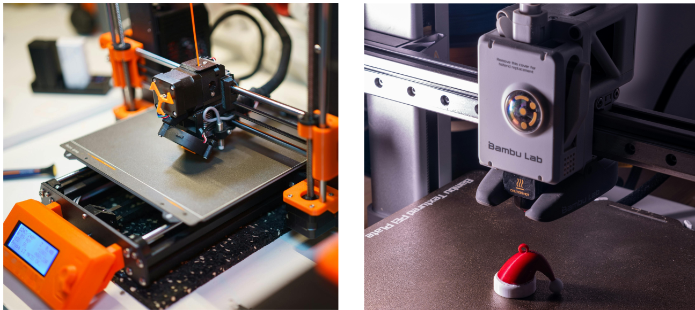
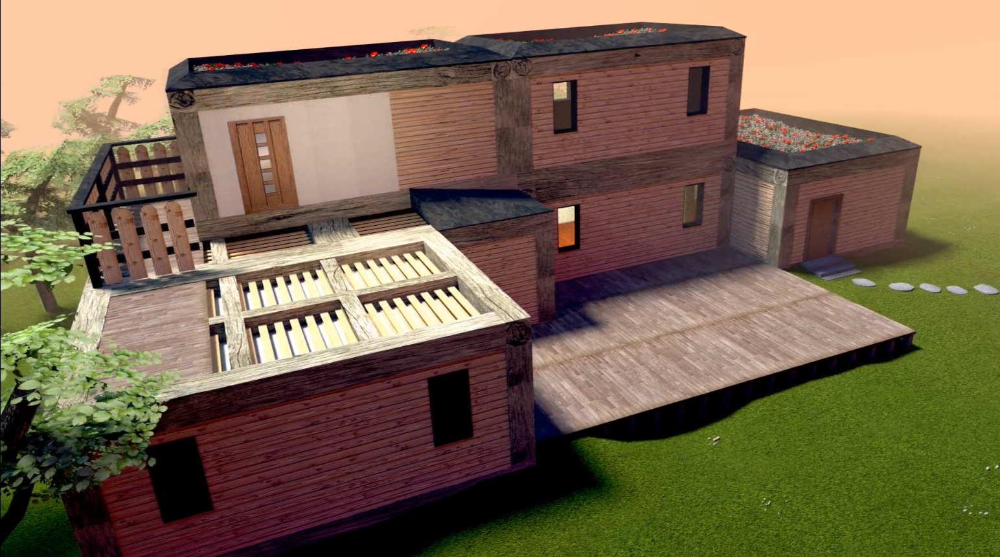

Industry Internship · Synova SA, Duillier · 2021

Development of a norm-compliant calibration procedure for Synova's 5-axis Laser MicroJet® CNCs — covering literature review, analysis of existing methods, and design of a correction method for rotational and translational axis misalignments, validated on the LCS-305 machine.
Industry Internship · Synova SA, Duillier · 2022

Analytical and experimental investigation into the influence of assist gas on Laser MicroJet® water-jet stability — combining fluid mechanics theory on Rayleigh–Plateau instability with test bench measurements and cutting trials on semiconductor and aeronautic-grade materials.
Academic + Personal Projects · EPFL · 2022–2024

General overview of FDM 3D printing — from the theoretical and practical challenges explored during the EPFL course "Introduction to Additive Manufacturing" to real-world functional applications, including a durable custom bike U-lock holder that has been in daily use for over two years.
Academic Project · CERN, Switzerland · 2017–2018

An engineering investigation into small-scale housing units using sustainable materials. This research was selected for presentation at the Globe of Science and Innovation as part of the "Mon TPE/TM en 15'" event at CERN.